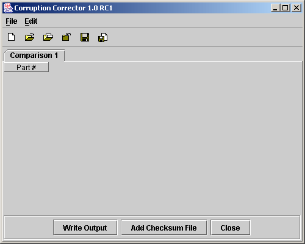
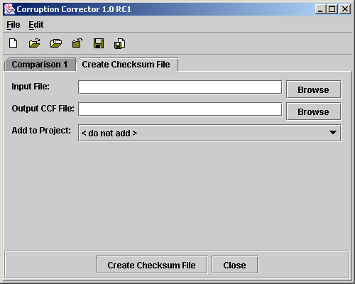
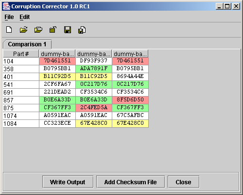

Copyright © 2003 Esko Luontola, esko.luontola@cs.helsinki.fi
INTRODUCTION
MINIMUM REQUIREMENTS
INSTALLING AND RUNNING
UNINSTALLING
HOW TO USE
ERROR MESSAGES
VERSION HISTORY
UPCOMING FEATURES
LICENSE
Last updated: 2003-02-19
Corruption Corrector (CCorr) is a program designed for fixing corrupt files. It is for situations when you have (downloaded) many copies of the same file, but all of the copies are a bit corrupt. If the corruptions are in different parts of the file, it is possible to combine the good bytes from each file and get an uncorrupted copy of the file.
At first CCorr creates checksums from the files at regular intervals (e.g. 16KB) after which the files can be compared to locate the corrupted parts. The user chooses which parts are corrupt and which are good, after which CCorr writes a combination of all the good parts into a new file, and thus fixes the corruptions if possible.
This program has been made by Esko Luontola using the Java programming language. Corruption Corrector is licenced under the GNU General Public License (GPL).
Web site: http://ccorr.sourceforge.net/
java -jar CCorr.jar or javaw -jar CCorr.jar or on some systems by double clicking the JAR file.ccorr.cfg file in your user home directory (e.g. C:\Documents and Settings\Username\ on Windows NT/2000/XP, /home/username/ on Unix/Linux) to remove all saved settingsIn the top are the menus and the icons for some actions. Hold your mouse over the icons for a tool tip text. In the middle are the program's windows opened on separate tabs. Click on the tabs to move between different views. Then you start the program, there will be one empty comparison opened. When the program is closed, you will be prompted for any unsaved modifications you have made.

What Corruption Corrector looks like when started
Open the Create Checksum File view and choose an input file - a file that needs to be fixed - by using the related browse button. The checksum file (.CCF) will be by default created to the same folder as the input file. You can directly make the checksum file part of a comparison project by selecting it from the dropdown menu.
Finally click the Create Checksum File button at the bottom of the screen and the program will start reading the input file. Depending the speed of your computer, this can take some while (a progress bar and a cancel button will appear). You can close the view with the Close button.

The Create Checksum File -view
Create a new comparison or load a previously saved from a file. Use the Add Checksum File button to add .CCF files to the comparison once you have created them.
The rows represent those parts of the compared files that include differences between two or more of the files. The first column shows the position as a part number (one part is usually 16KB) or the byte offsets. You can change the view by right-clicking the numbers in the first column. The other columns represent the files that are being compared. In each cell reads the checksum of that particular part.
You can change the markers by right-clicking each checksum or by selecting the cell and choosing an option from the Edit menu. To be able to write an output file, there needs to be at least one part marked good (green color) in each row. Corrupted parts should be marked bad (red color) and parts that you are not sure about should be marked unsure (yellow color). And about locating the corruptions... I'll write an article about that someday.
Once the uncorrupted parts are marked, you can click the Write Output button, and the program will combine the files and write a new file after prompting for the location. This operation can take some time depending on the speed of your computer (a progress bar and a cancel button will appear). You can close the comparison with the Close button.

Example of a Comparison
| Message | When | Possible Reasons |
|---|---|---|
| A valid file needs to be selected. | When choosing an input file in the CCF screen | The file you tried to select was not a file. |
| An error happened in making the Checksum File. | When creating a CCF file | The program was unable to read the input file or the operation was cancelled. |
| It is not possible to create a good output file. More good parts are needed. | After pressing Write Output in a comparison | Each row in a comparison table must have at least one good part (green). Mark more parts as good. |
| The file <filename> was not recognized as a valid CCorr Checksum File. | Adding a checksum file to a comparison | The file you tried to open was made with a different CCorr or Java version, or it is a completely unrelated file. |
| The file <filename> was not recognized as a valid CCorr Comparison Project. | When opening a saved comparison | The file you tried to open was made with a different CCorr or Java version, or it is a completely unrelated file. |
| The input file <filename> can not be read. | When creating a CCF file | The input file either does not exists or you do not have reading permissions. |
| There was an error in writing the file <filename>. | (many places) | Make sure that you have read/write permissions to the files, there is enough free space on the drive. |
| Unable to write the output file. | When creating a CCF file | You do not have writing permissions, the file is not valid, or some other error. |
"When they are ready."
Copyright (C) 2003 Esko Luontola, esko.luontola@cs.helsinki.fi This program is free software; you can redistribute it and/or modify it under the terms of the GNU General Public License as published by the Free Software Foundation; either version 2 of the License, or (at your option) any later version. This program is distributed in the hope that it will be useful, but WITHOUT ANY WARRANTY; without even the implied warranty of MERCHANTABILITY or FITNESS FOR A PARTICULAR PURPOSE. See the GNU General Public License for more details. You should have received a copy of the GNU General Public License along with this program; if not, write to the Free Software Foundation, Inc., 59 Temple Place - Suite 330, Boston, MA 02111-1307, USA.